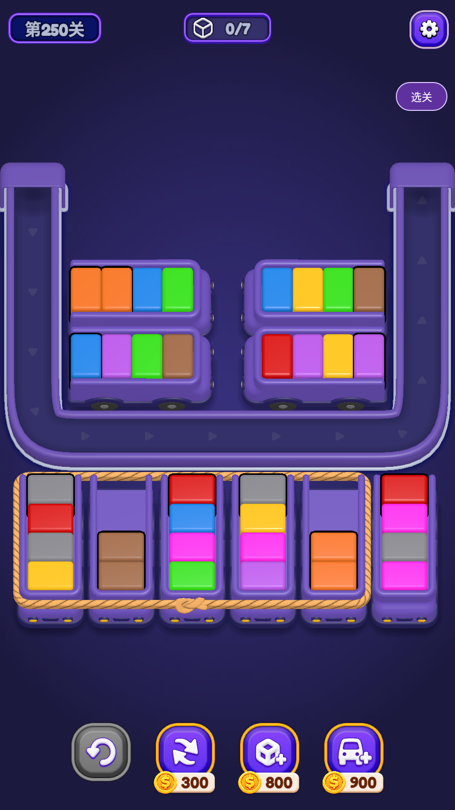
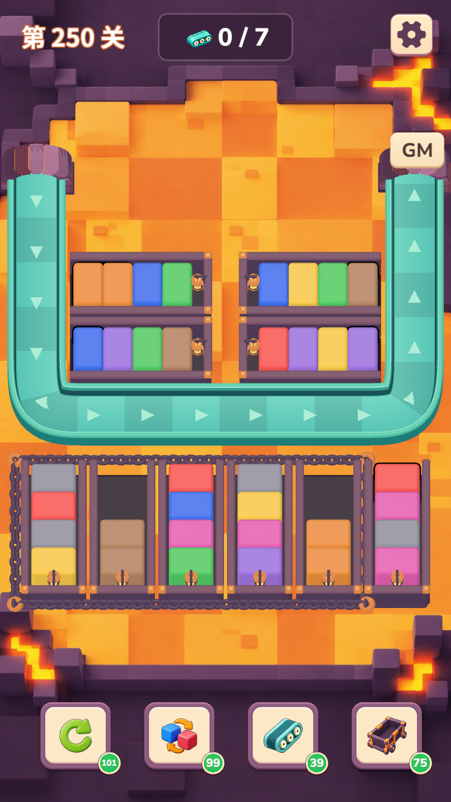
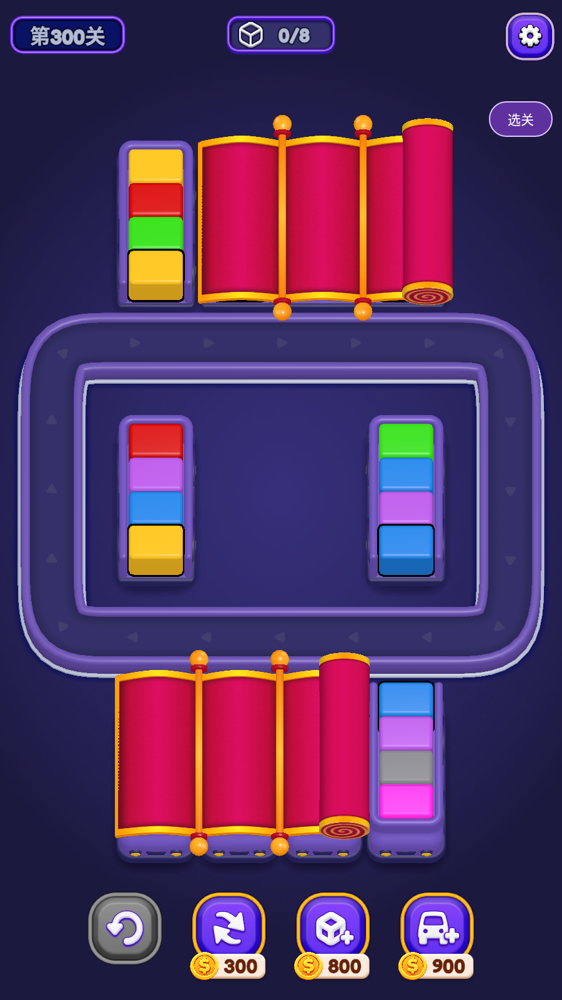
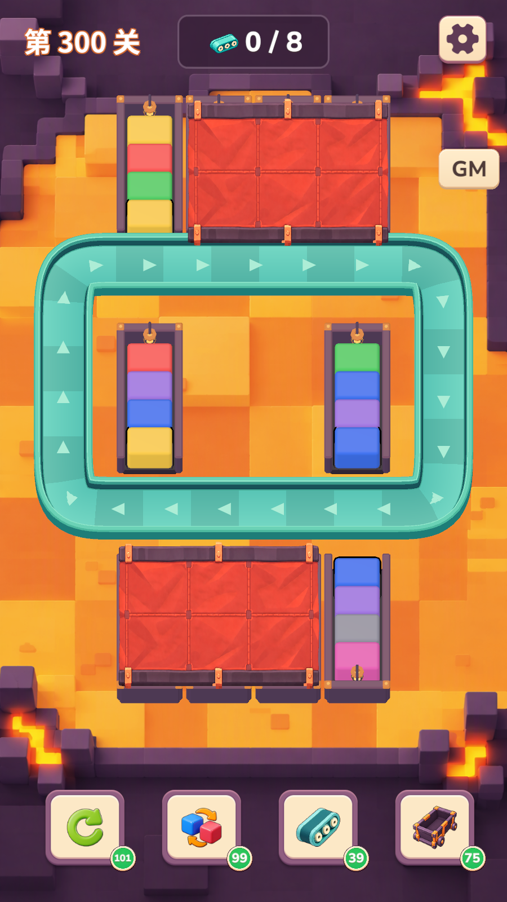
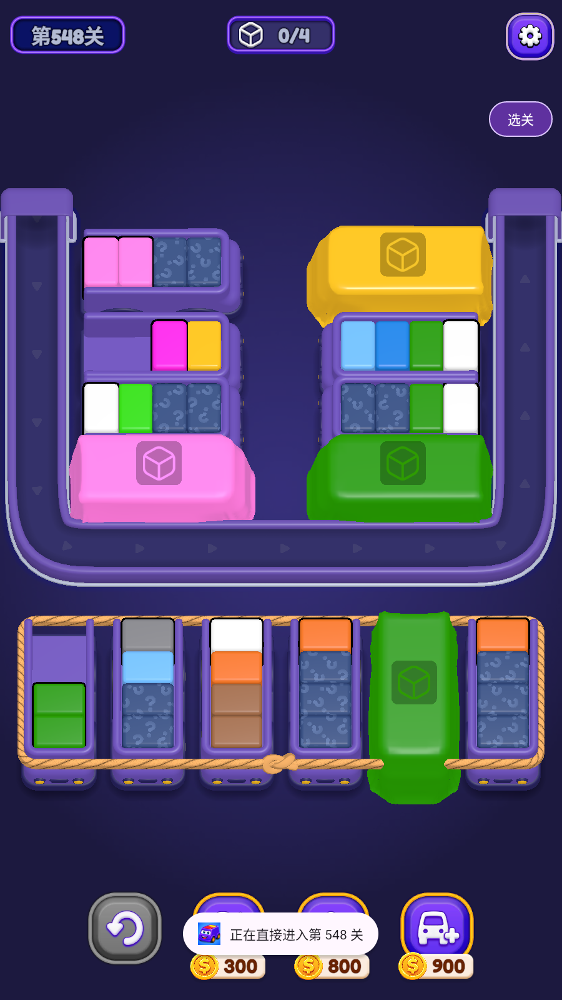
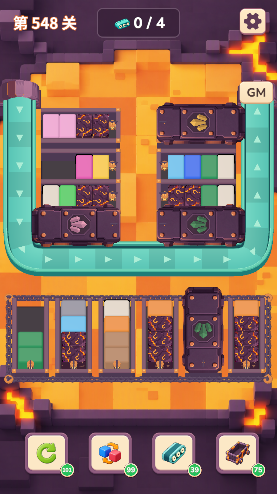

参考 LoopSort-4.6.0-LevelMenu-v3-arm64.apk。原始关卡数据与重新导入结果逐项比对，取消额外平移，按原版坐标、朝向与模型占地显示。保留当前火山画风。铁链按原版端点计算包围范围，镜头仅在实际裁切时补足范围。
校验包含每关初始布局和逐次加车状态；画面范围检查采用 900×1600 与 750×1650。以下为静态几何校验与抽样截图，并非逐关通关测试；不声明 Cinemachine 像素级完全一致。
{
"running": false,
"totalLevels": 1299,
"levelsDone": 1299,
"checkedPlacements": 3897,
"checkedCarts": 48366,
"error": "",
"poseErrorLayouts": 0,
"viewportWarningLayouts": 0,
"maximumPositionError": 2.1324806311895372e-06
}




